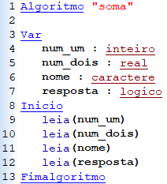
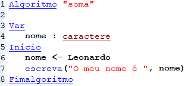

Todo tipo de computador, desde um relógio de pulso digital até um supercomputador científico, possui mecanismos de comunicação com o mundo exterior, mecanismos que levam informações de fora para dentro do computador (entrada) e mecanismos que levam informações do computador para fora (saída). Para acionar o mecanismo de saída em portugol usa se o comando “escrever” e para o mecanismo de entrada o comando “ler”. Dentro da aplicação VISUALG estes comandos são substituídos por “escreva” e “leia” respetivamente.
Quando tencionamos que o utilizador digite uma mensagem para o programa em execução necessitamos de atribuir a mesma a uma variável, qual pode ter diferentes tipos. Uma variável pode ser associada a um dos 5 tipos existentes: inteiro (inclui todos os números inteiros), real (inclui todos os números reais), caractere (inclui, como o nome indica, um caractere), texto (inclui qualquer cadeia de caracteres) e lógico (inclui um sentido lógico, verdadeiro ou falso). Alguns editores de pseudocódigo não possuem o tipo “texto”, então o tipo “caractere” inclui as cadeias de caracteres também.
Como é declarada e preenchida uma variável com um comando de entrada utilizando o VISUALG:
Quando tencionamos que a máquina imprima uma mensagem para o utilizador essa informação pode estar associada ou não a uma variável. Quando associada devemos usar o comando "escrever" e entre os parênteses o nome da variável. Já uma mensagem personalizada devemos escrever entre parênteses e entre aspas. Além da variável impressa poder ser uma mensagem escrita pelo o utilizador, pode também ser uma mensagem escrita pelo programador, e para isso usamos os sinais de atribuição “ <- “. Além disso, quando desejamos imprimir texto e variáveis na mesma linha de código devemos separar ambas por uma vírgula.
Como é impressa uma mensagem e uma variável com um comando de saída utilizando o VISUALG:
+351930608703